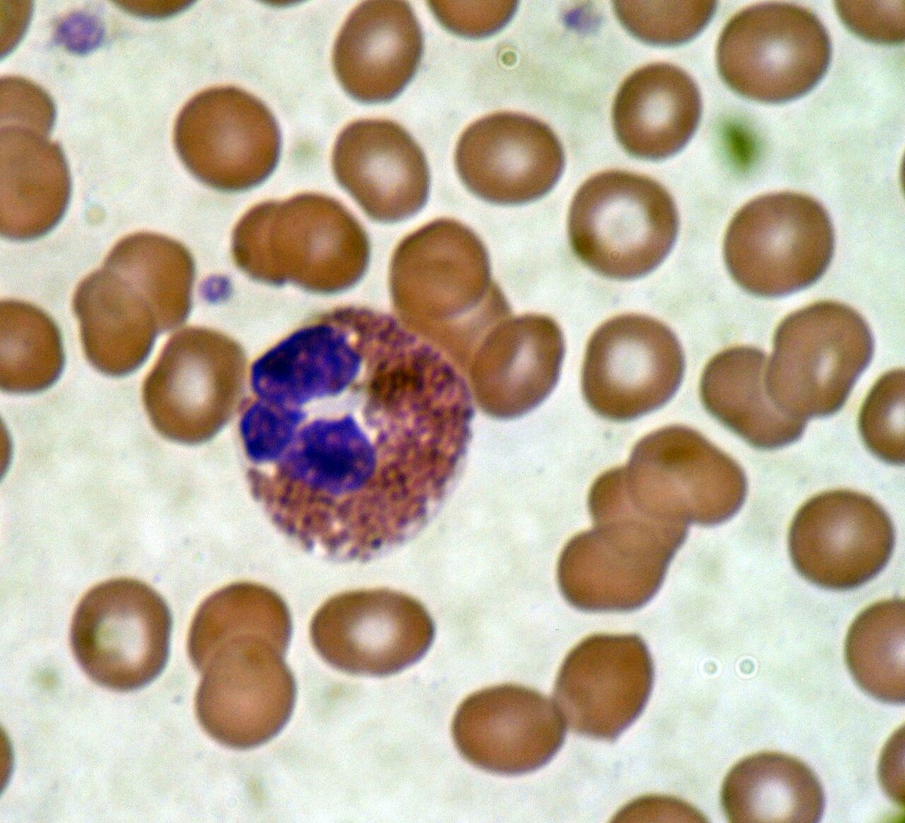

호산구 (Eosinophil)

쉽게 풀면
호산구는 주로 기생충처럼 몸집이 커서 삼킬 수 없는 병원체와 싸울 때 활약하는 세포이다. 세포 안의 독성 단백질 과립을 기생충 표면에 직접 방출해서 손상을 입힌다. 또한 천식이나 아토피 같은 알레르기 질환에서도 조직에 많이 모여들어 염증을 악화시키는 역할을 하기 때문에, 혈액 속 호산구 수치는 알레르기 질환이나 기생충 감염을 의심하는 검사 지표로 쓰인다.
왜 중요한가
호산구는 천식, 아토피피부염, 만성비부비동염 같은 제2형 염증 질환의 핵심 매개세포로 알려져 있어, 최근 알레르기·면역학 연구에서는 호산구를 표적으로 하는 생물학적제제(단클론항체 등)의 효과를 평가하는 논문이 활발히 발표되고 있다. 또한 혈액 내 호산구 수치는 감염내과와 임상병리 영역에서 기생충 감염이나 특정 약물 부작용을 감별하는 데 실용적인 검사 지표로 쓰이기 때문에, 진단 연구에서도 자주 언급된다.
어디에 있고 어떻게 생겼나
호산구는 다세포 기생충과 일부 감염에 맞서고 알레르기·천식 반응을 일으키는 백혈구이다. 건강한 사람 백혈구의 약 1~3%를 차지하고 지름은 약 12~17 µm이며, 두 갈래로 나뉜 핵을 가진다. 과립이 에오신에 물들어 로마노프스키 염색에서 벽돌색으로 보인다.
- 과립 성분: 주요 염기성 단백질(MBP), 호산구 양이온성 단백질(ECP), 호산구 과산화효소(EPX), 호산구 유래 신경독소(EDN)가 들어 있으며, 탈과립으로 방출되어 기생충과 숙주 조직에 독성을 띤다.
- 발생: 골수의 골수계 전구세포에서 만들어지며 IL-5가 이를 조절한다. 성숙하면 혈액을 돌다가 조직으로 이동한다.
- 수명: 혈액에서 약 8~12시간 돌고, 자극이 없으면 조직에서 8~12일 더 산다.
맡은 기능
- 기생충 방어: 몸집이 커서 삼킬 수 없는 병원체에 대해 독성 과립을 방출한다.
- 알레르기 염증: 천식 중증도와 알레르기 비염에 기여한다. 호산구증가증은 기생충 감염, 자가면역 질환, 일부 암, 페니실린 같은 약물로 생길 수 있다.
- 혈구 수: 건강한 성인의 중앙값은 약 100개/µL이고 400개/µL를 넘으면 정상 범위 밖이다. 호산구증가증은 500개/µL 초과, 과호산구증가증은 1,500개/µL 초과이며 이 기준은 다소 임의적이다. 비공식 중증도는 경도 500~1,500, 중등도 1,500~5,000, 중증 5,000 초과이다.
- 원인: 전 세계적으로 기생충과 알레르기가 가장 흔하다. 서구에서는 알레르기·아토피 질환이, 개발도상국에서는 기생충 감염이 많다. 약물로는 페니실린, 설폰아마이드, 카르바마제핀, NSAIDs가 흔하며 심한 반응이 DRESS 증후군이다. 호지킨 림프종과 일부 백혈병, 자가면역 질환, 면역결핍, 부신 기능 부전, HIV도 원인이다.
연구에서 다루는 방식
- 측정: 먼저 전혈구 계산(CBC)을 하고, 여행·알레르기·약물 이력을 확인한다. 호산구 증가가 뚜렷하면 절대 수를 따로 구할 필요가 없을 수 있으나 더 정확한 값이 필요한 경우도 있다. 대변 검사가 음성이어도 기생충을 배제하지 못한다.
- 치료 표적: 코르티코스테로이드는 혈중 호산구를 빠르게 줄인다. 메폴리주맙과 벤랄리주맙 같은 생물학적제제는 IL-5 또는 그 수용체를 표적으로 호산구를 낮춘다.
- 논문에는 호산구 수의 단위(개/µL, ×109/L), 측정 시점, 기준값, 복용 약물(특히 스테로이드)을 함께 적는다. 면역 억제는 기생충 감염이 있는 사람에게 위험할 수 있다.
논문에서는 이렇게 쓰입니다
실제 논문에서
국내 학술지 논문에서 이 용어가 쓰인 문장을 그대로 옮겼다. 제목·학술지·연도와 원문 링크를 함께 적었다.
“이 외에도 점막 고유층에서 일부 근육층에 걸쳐 원형 종양세포의 침윤과 부위에 따라 형질세포, 큰포식세포, 소수의 호산구의 침윤이 관찰되었다.”
개의 소장에서 발생한 장상피 친화성 T세포 림프종 사례, Korean Journal of Veterinary Research, 2025 · KoreaMed Synapse · 원문 보기 ↗
“혈구구성은 Eosinophil이 조섬유 수준이 높아질수록 유의적으로 낮아졌으나(p<.05), 이외 혈구 및 혈액 이화학성분은 유의적인 차이가 없었다.”
고온환경에서 사료 내 조섬유 수준이 육성돈의 성장, 고온 스트레스 지표, 혈구구성, 혈액이화학지표, 영양소 소화율에 미치는 영향, 한국산학기술학회논문지, 2024 · KCI 한국학술지인용색인 · 원문 보기 ↗
조금 더 깊게 보면
호산구의 분화와 활성화는 인터루킨-5(IL-5) 같은 사이토카인의 영향을 크게 받으며, 이 때문에 IL-5 신호전달을 차단하는 항체 치료제가 중증 호산구성 천식 치료제로 개발되어 있다. 연구에서는 혈액 내 호산구 절대수(백혈구 총수에 호산구 백분율을 곱한 값)나 객담·조직 내 호산구 비율을 정량적 지표로 사용해 염증의 정도와 치료 반응을 평가하는 경우가 많다. 다만 호산구 수치는 감염, 약물, 자가면역질환 등 다양한 원인으로도 변동할 수 있어, 단독 수치만으로 특정 질환을 확진하기는 어렵다는 점이 함께 언급된다.
주의할 점
호산구라는 이름은 산성 염색약인 에오신에 잘 염색되는 성질에서 유래했으며, 호산구 자체가 산성을 띠는 것은 아니다.
참고 문헌
- Wikipedia contributors (n.d.). Eosinophil. Wikipedia.
- Wikipedia contributors (n.d.). Eosinophilia. Wikipedia.